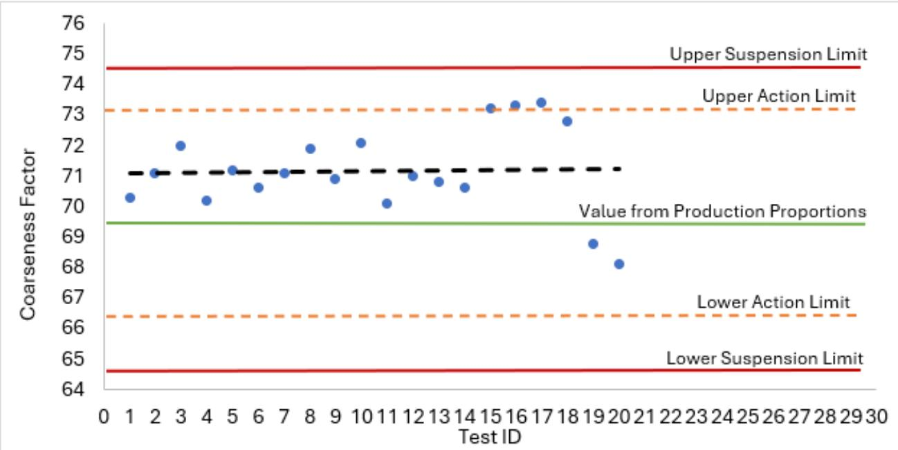
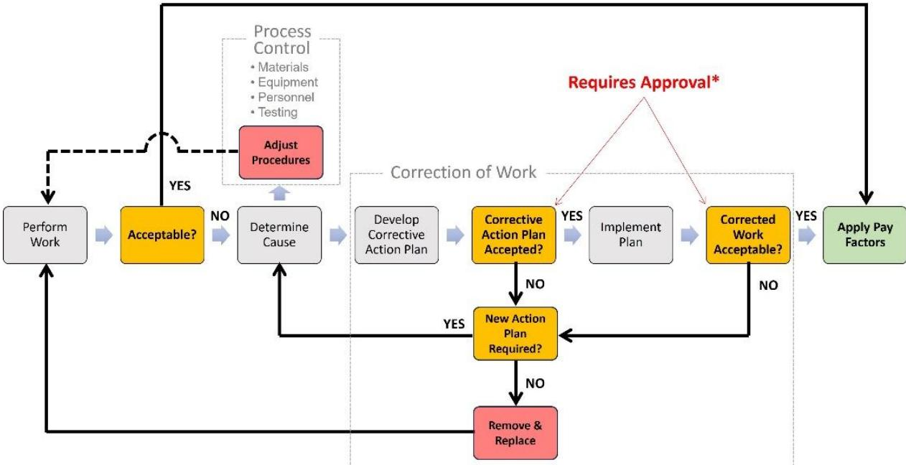
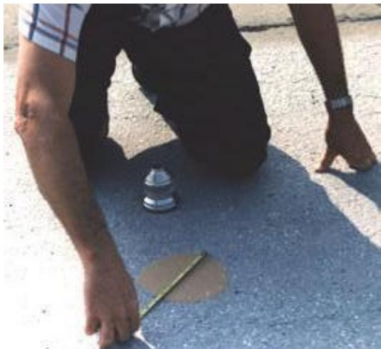

Quality Control Documentation
Quality Control Documentation is the systematic collection and recording of test results, inspections, equipment calibrations, material properties, and workmanship observations that together evaluate and control every material, process, and component influencing concrete‑pavement quality [1][2]. It verifies that aggregates, cementitious materials, mix parameters, and concrete performance characteristics meet specified acceptance criteria, provides verifiable proof that each mandated QC activity has been performed daily, links production reports to payment eligibility, and mandates immediate corrective action when measurements approach or exceed defined limits [1][2]. Organized through a Contractor Quality Control Program, the documentation specifies qualified personnel, calibrated equipment, statistically‑based random sampling, required test frequencies, standard report forms, and controlled record‑keeping to ensure traceability, timely submission, and ready availability for agency review throughout construction and post‑construction monitoring [1][2].
Sources (3)
Purpose and quality objectives
Quality Control Documentation evaluates and controls the material constituents, mix composition, process parameters, workmanship, and performance characteristics of concrete pavement construction. It verifies that all aggregate and cementitious materials—including sieve analysis, combined gradations, fineness modulus, moisture content, specific gravity, organic impurities, sand equivalent, and deleterious substances—meet specified acceptance criteria, and it confirms concrete attributes such as temperature, entrained air, slump, unit weight, flexural strength, compressive strength, hydration calorimetry and maturity. The documentation also monitors critical mix‑control parameters like air content and triggers corrective actions when measurements approach established limits. In addition, it ensures that laboratory and batch‑plant equipment are properly calibrated and inspected, that scales and other measuring devices are certified, and that batch tickets or electronic tickets track production runs. Underlying base course condition, placement equipment operation, and overall workmanship are likewise documented to confirm compliance with contract specifications. [1][2]
The following figure illustrates two methods used to verify pavement thickness during construction.
 A worker operating a Rover pole for as-built thickness checks on a concrete pavement. [1]
A worker operating a Rover pole for as-built thickness checks on a concrete pavement. [1]
The image shows a construction worker wearing a hard hat and holding a long, graduated metal rod known as a Rover pole to measure the depth of freshly placed concrete.
[1] — Ch. 4 (pp. 150–165), Ch. 5 (pp. 230–231), Ch. 7 (p. 337), App. A (pp. 366–383); [2] — App. A (p. 115), App. C (p. 123), App. D (pp. 132–141)
Quality Control Documentation is required to ensure that every concrete‑pavement activity complies with contract specifications and accepted standards and to prevent placement of non‑conforming material. The guides mandate a documented system—typically a Contractor Quality Control Program—that specifies qualified personnel, testing plans, sampling procedures, equipment calibration, test frequencies, submittal timelines, and recording of results so the contractor can demonstrate compliance. By maintaining daily logs and standardized test report forms, the documentation provides “verifiable proof that every mandated quality‑control activity and test has actually been carried out each day of construction” and creates a traceable record that can be reviewed for compliance. The records link production reports to QC reports, tie payment eligibility to approval of the Pavement Quality Control Plan, and require “corrective‑action provisions when acceptance criteria are not met.” When results fall outside specified acceptance limits, the documentation must trigger immediate corrective action, including suspension of operations until conformity is restored. Statistical control charts and non‑conformance lists are used to identify out‑of‑control processes, and all testing must be performed by approved laboratories with calibrated equipment. Failure to submit timely reports can result in nonpayment for related work. [1][2]
The following figure illustrates how these contractor quality control and process control activities integrate with quality assurance and acceptance procedures.
 Integration of contractor QC and process control activities with QA and acceptance. [1]
Integration of contractor QC and process control activities with QA and acceptance. [1]
The figure illustrates a workflow where pavement placement (P) is followed by testing and inspection (I), which generates reports for an analytics dashboard to drive corrective actions or lead to success evaluation (E). The process includes a feedback loop where deficient pavement triggers rework or removal, ensuring that the final product meets specified quality parameters before acceptance and payment.
[1] — Ch. 4 (pp. 150–165), Ch. 5 (pp. 230–231), Ch. 7 (p. 337), App. A (pp. 366–383); [2] — App. A (p. 115), App. C (pp. 123–124), App. D (pp. 131–146)
Scope and applicability
The guides state that Quality Control Documentation applies to every material, construction process, pavement component, equipment item, and project condition that can influence the final pavement quality of a concrete paving project. It covers the underlying subgrade, subbase, base and surface‑course materials; all aggregate, cementitious, admixture, curing‑compound, epoxy and related stockpiles; mixing water; concrete mix design, batching, mixing, transportation, placement, consolidation, finishing, texturing, curing, saw‑cutting of joints, dowels or tie bars, and any associated laydown planning. The documentation also governs storage, handling, and production equipment for the concrete mixtures, as well as the pavement surface, shoulders, and supporting subgrade and base layers. Testing requirements extend to field sampling and laboratory testing of subgrade, base, aggregate, concrete‑making materials, and placed concrete; in‑place sampling of the constructed pavement; and inspection of on‑site paving work and related construction items. All QC sampling and testing of these materials and activities must be recorded on standard test report forms. [1][2]
[1] — Ch. 4 (pp. 150–165), Ch. 5 (pp. 230–231), Ch. 7 (p. 337), App. A (pp. 367–383); [2] — App. A (p. 115), App. C (p. 123), App. D (pp. 132–140)
The merged guidance indicates that quality‑control documentation is required in several circumstances. It is mandatory for all federally funded paving contracts exceeding $500,000 – “All federally funded projects over $500,000 which include paving as the major work item must have a CQCP” – and the plan must be a written document that “shall be reviewed and approved by the RPR prior to the start of any production, construction or off‑site fabrication.” In addition, documentation is required whenever the project calls for recordkeeping or reporting activities, such as daily contractor reports, interim reports, corrective or preventative action records, non‑conformance procedures, dispute‑resolution actions and internal quality audits; “the agency expects these documents to be readily available to its personnel.” The requirement extends to every instance of sampling, testing and inspection: “All QC sampling and testing of materials used in construction of the concrete pavements will be documented on the following standard test report forms” and “All QC inspection activities during production will be documented on the following standard QC inspection report forms.”
Optional documentation is limited to supplemental elements that are not expressly required by the specifications. The guides agree that while the core plan is compulsory, “supplemental elements such as statistical control charts may be used voluntarily unless the specifications specifically require them.” No other optional categories are identified.
Documentation is deemed inappropriate – and work may not proceed – when the QC Manager is absent from the site: “no construction work or testing may be performed unless the QC Manager is on the work site.” The second guide does not cite any additional situations where documentation would be inappropriate.
Several limitations apply to all required documentation. The CQCP must “clearly identify the items to be tested, the tests to be performed, the sampling protocol, and the testing frequency.” Test reports must be signed by the QC manager (“The reports need to be signed by the QC manager”) and submitted promptly – “Field test reports must be submitted within two working days after the test is performed” – with failure to do so resulting in non‑payment and possible disapproval of the test facility (“Failure to submit timely test reports as stated results in nonpayment for related work performed and disapproval of the test facility for this Contract.”) Records must cover both conforming and defective features and include a compliance statement (“Records cover both conforming and defective or deficient features and must include a statement that all supplies and materials incorporated in the work are in full compliance with the terms of the contract.”) All documentation must be retained in an accessible, controlled system – “PCC Paving Company will retain a complete record of all completed testing and inspection in accessible files that will be labeled as the “QC Record System – Concrete Pavement and Shoulders”.” – and submitted to the overseeing agency with each weekly summary (“PCC Paving Company will also submit copies of all completed QC sampling and testing report forms to the State Transportation Agency with each “Weekly QC Summary Report.””). Finally, “the guidance does not identify any situation where documentation is optional or inappropriate; the only limitations are that records be tied to corrective‑action and audit processes, use the prescribed standard forms (or suitably modified versions), be properly labeled, controlled, and readily available to agency personnel.” [1][2]
[1] — Ch. 4 (pp. 150–165), Ch. 5 (pp. 230–231), Ch. 7 (p. 337), App. A (pp. 367–383); [2] — App. A (p. 115), App. D (pp. 140–143)
Test methods and procedures
Quality Control Documentation requires that all concrete testing be performed in an ASTM‑accredited laboratory (ASTM D3740, ASTM E329) using calibrated instruments whose records are verified against certified standards. “the Contractor’s QC testing facility must provide equipment, materials, and reference standards to meet the requirements of paragraph 7 - Test Methods and Procedures, and paragraph 8 - Facilities, Equipment, and Supplemental Procedures of ASTM C1077”. All mixing, proportioning, placing, finishing, and compacting equipment shall be inspected for proper operation: “All equipment used in proportioning and mixing shall be inspected to ensure its proper operating condition.” The QC testing plan must list each required test (e.g., aggregate sieve analysis ASTM C136, slump ASTM C143, compressive strength ASTM C39, maturity ASTM C1074), cite the specific ASTM designation, specify frequency, target values and permissible deviations, and assign responsibility to the appropriate QC technician. The plan must also incorporate a statistically based random‑sampling procedure: “FAA requires the testing plan to include a statistically-based procedure for random sampling to acquire test samples in accordance with ASTM D3665.” For every test, the contractor’s laboratory shall follow the referenced ASTM method, which defines the required equipment, sample preparation, step‑by‑step procedure, calibration checks, and acceptance limits. Test results—whether pass or fail—are recorded on the daily CQC report with specification paragraph reference, location, and a sequential control number; any result outside the limits triggers corrective action as defined in the QC plan. [1]
The following figure illustrates typical concrete aggregate sieves with the recommended full-height frame.
 Typical concrete aggregate sieves with the recommended full-height frame on the left (source: Gilson 2023). [1]
Typical concrete aggregate sieves with the recommended full-height frame on the left (source: Gilson 2023). [1]
The figure displays three stainless steel sieve frames of varying heights, each containing a mesh screen.
[1] — Ch. 4 (pp. 150–162), App. A (p. 369)
Valid Quality Control Documentation must show that all mixing and proportioning equipment is inspected for proper operation, that laboratory instruments are listed with manufacturer, serial numbers and the most recent calibration or certification dates, and that personnel performing QC functions hold documented certifications and training. The guides agree on the need for equipment inspection, calibrated instrument inventories, and qualified staff. However, they differ on environmental controls: one guide requires explicit inclement, hot, and cold weather plans to be addressed in the QC plan, while the other does not specify such provisions. [1][2]
The following figure illustrates a clean mixer drum and blades with minimal wear, highlighting the importance of proper equipment inspection.
 Interior view of a concrete mixer drum showing blades with minimal wear. [1]
Interior view of a concrete mixer drum showing blades with minimal wear. [1]
The image displays the interior of a rotating concrete mixer, featuring yellow paddles or blades attached to the central shaft and surrounding walls. This visual evidence supports Quality Control Documentation by illustrating the physical condition of mixing equipment that must be monitored for wear as part of a QC plan.
[1] — Ch. 4 (pp. 150–165), App. A (pp. 366–370); [2] — App. A (p. 115), App. C (p. 123), App. D (p. 132)
Sampling and testing frequency
According to the QC testing plan, sampling locations are selected through a statistically‑based random procedure that follows ASTM D3665, providing a transparent and auditable basis for where samples are taken. The plan “shall include the minimum tests and test frequencies required by each technical specification Item, as well as any additional QC tests that the Contractor deems necessary to adequately control production and/or production processes.” Test frequency is therefore set at least to the minimum required by the applicable specifications, with extra testing added for process control. Sampling and testing are organized around each Definable Feature of Work (DFOW) using the DoD “Three Phases of Control” approach; the QC Manager must conduct a preparatory, an initial, and a follow‑up phase to “adequately cover both on‑site and off‑site work for each definable feature of construction work.” The initial phase records the exact location of the first test section or control strip, while the follow‑up phase is performed daily, or more frequently as necessary, until the DFOW is completed. Quantities of samples are driven by the number of required test sections (or lot/sub‑lot sizes) specified for each DFOW and by project characteristics, agency requirements, and company preferences as captured in the written CQCP. The combined use of statistically based random sampling, defined test‑section counts per DFOW, and minimum‑plus‑additional frequency requirements determines the locations, quantities, and timing of all QC testing. [1]
The following figure illustrates a practical application of these procedures through control and test strip paving.
 Control/test strip paving (source: ACPA). [1]
Control/test strip paving (source: ACPA). [1]
The image displays a large yellow slip-form paver actively laying down a continuous concrete pavement surface. Several workers in high-visibility safety gear are present, with one kneeling to inspect the edge of the fresh concrete and others monitoring the machinery. This scene depicts a control/test strip, which is required before production paving begins to demonstrate the ability to manage materials and processes according to contract documents. The construction of this strip serves as a critical component of Quality Control Documentation by verifying that the equipment and workmanship meet specified acceptance criteria prior to full-scale production.
[1] — Ch. 4 (pp. 152–161), Ch. 5 (pp. 230–231)
Across the guides, samples or measurements must be obtained using a statistically‑based random sampling procedure that follows ASTM D3665, ensuring the selected items are representative of the material, process, lot, or completed work. The QC manager must define a sampling protocol in the CQCP that specifies which items, tests, and frequencies will be used, and it must incorporate a random sampling plan to ensure that the selected samples or measurements are representative of the material, process, lot, or completed work. Samples must be taken as randomized field collections that reflect the actual material, process, lot, or finished work. The testing plan should clearly describe this procedure so it is transparent and allows the RPR to observe the QC sampling and testing activities. Qualified on‑site field QC personnel select samples by taking random field specimens of the subgrade, base or concrete pavement that will be sent to the laboratory, as well as performing in-place sampling and testing directly on the work. The randomness ensures the collected material is representative of the entire lot, process or completed paving section. [1][2]
[1] — Ch. 4 (p. 152), Ch. 5 (pp. 230–231), App. A (pp. 367–368); [2] — App. D (p. 133)
Acceptance criteria and tolerances
Acceptability is determined by comparing every quality‑control measurement to the numerical or statistical limits established in the applicable specifications. Test results must fall within the tolerance limits or specifications defined in the relevant ASTM standards—e.g., aggregate sieve analysis must meet the tolerance limits of ASTM C136, concrete slump must satisfy the criteria of ASTM C143, air content must comply with ASTM C231, and compressive strength must achieve the values set by ASTM C39. In addition, each measurement is checked against predefined action limits and suspension limits; any exceedance triggers corrective action or work‑suspension as required. Visual inspection items are also listed in the documentation, and identified deficiencies are treated with the same corrective process. [1][2]
[1] — App. A (p. 369); [2] — App. C (pp. 123–124)
The CQCP requires that daily QC reports be reviewed and each test result—such as air‑content measurements—be plotted on statistical control charts to see whether it stays within the specified limits. When an individual result or a series of results begins to trend toward an action limit, the documentation triggers predefined corrective actions to bring the process back into control. By monitoring lot averages and variability on these charts, any drift toward out‑of‑control conditions is identified early, prompting the same corrective procedures. [1]
The following figure illustrates a control chart for concrete flow that utilizes statistically computed central lines along with defined action and control limits.
 Control chart for CF using statistically computed central line and action and control limits. [1]
Control chart for CF using statistically computed central line and action and control limits. [1]
The figure displays a statistical control chart plotting the Coarseness Factor against Test ID, featuring a Central Line representing the Process Average alongside Upper and Lower Action Limits at ±2s and Control Limits at ±3s.
[1] — Ch. 4 (p. 154)
Quality control and process monitoring
The guides require continuous monitoring of a comprehensive set of material and process characteristics throughout production and construction to maintain consistent quality. Material conditions that must be documented include “Address all elements applicable to the project that affect the quality of the pavement structure including subgrade, subbase, base, and surface course.” Aggregate properties are recorded through “Aggregate Sieve Analysis – to establish compliance with the tolerance limits (ASTM C136)” as well as combined gradations, fineness modulus, moisture content, decantation, specific gravity, organic impurities, sand‑equivalent values and any deleterious substances. Concrete mix attributes monitored comprise temperature, entrained air content, “Concrete Slump – to monitor for batch-to-batch workability changes and specification compliance (ASTM C143)”, unit weight, flexural and compressive strengths (“Concrete Compressive Strength – for specification compliance and for timing operations and phases (ASTM C39)”), hydration behavior and maturity. The documentation also captures “Equipment calibration and condition inspection” and other pre‑placement checks of equipment operation and placement conditions. Process controls required are listed under “Some elements that must be addressed include, but are not limited to, mixture design, aggregate grading, stockpile management, mixing and transportation, placing and finishing, quality control testing and inspection, smoothness, laydown plan, equipment, and temperature management plan.” This includes stockpile management, mix proportions, batching operations, mixing and transportation parameters, placement and consolidation details such as smoothness, lay‑down plan, equipment performance and temperature control. For each batch the results of laboratory and field tests are recorded – “Aggregate gradation”, “Slump”, “Compressive or flexural strength”, SAM values, unit weight, resistivity/F‑factor, and hydration (e.g., “Hydration: Semi-adiabatic calorimetry”) – and compared to approved mixture designs, target values and permissible deviations (“Test type (e.g. gradation, compressive strength)”, “Control requirements (e.g. target and permissible deviations)”). The plan specifies testing frequency (“Test frequency (e.g. as required by technical specifications or minimum frequency when requirements are not stated)”) and employs a statistically‑based random sampling procedure (“statistically-based procedure for random sampling to acquire test samples in accordance with ASTM D3665”), with results plotted on “statistical QC charts” to trigger corrective actions when limits are approached. [1][2]
The following figure illustrates the sequential steps for adjusting concrete mixture proportions as part of this proactive process control.
 Sequential steps for adjusting concrete mixture proportions as part of proactive process control. [1]
Sequential steps for adjusting concrete mixture proportions as part of proactive process control. [1]
The figure displays a four-stage workflow diagram illustrating the progression from laboratory design to production management. The sequence begins with Laboratory Developed Mixture Design, followed by Contractor Full-Scale Test Batches for validating the mix, then a Control Strip or Test Section for fine tuning, and finally Production. This workflow represents the proactive management of mixture adjustments required to meet quality standards during construction.
[1] — Ch. 4 (pp. 150–165), Ch. 5 (pp. 230–231), App. A (pp. 367–369); [2] — App. A (p. 115), App. C (p. 123), App. D (p. 134)
The guides require that any observed trend toward non‑conformance, any deviation beyond the target value and its allowable tolerance, or any test result that fails to meet the contract’s acceptance criteria must trigger corrective action. This includes consecutive air‑content measurements that are moving toward an action limit, statistical QC charts that show the process is out of control or drifting, and results that exceed the defined action limits or reach suspension limits. Likewise, when checklist or visual inspection items reveal deficiencies, or when laboratory or field samples do not satisfy the specification limits for concrete or its constituents, the non‑conforming condition must be reported and used to initiate process adjustments, additional monitoring, repeat testing, or an immediate stop of production until compliance is re‑established. [1][2]
The following figure illustrates a control chart for concrete fillability that applies these current specification action and suspension limits.

Control chart for CF using current specification action and suspension limits. [1]The figure displays a statistical control chart plotting the Coarseness Factor against Test ID, featuring horizontal lines representing Upper Suspension Limit, Lower Suspension Limit, Upper Action Limit, Lower Action Limit, and Value from Production Proportions.
[1] — Ch. 4 (pp. 150–163), App. A (pp. 366–368); [2] — App. C (pp. 123–124), App. D (pp. 132–133)
Nonconformance and corrective action
The guides require that when a QC inspection or test reveals non‑conforming work or material, the contractor must first formally identify the deficiency—recording its location, nature and cause for rejection—and immediately halt any further production or placement of that item. The defect is placed on a Deficiency/Rework (or punch‑out) list maintained by the QC Manager, which is reviewed at weekly QC meetings and attached to the monthly CQC report. A documented corrective‑action plan, including required remediation steps and target correction dates, must be prepared and submitted for review and concurrence by the Resident Project Representative (RPR) or Contracting Officer before any successor work may proceed. The daily inspection report containing this information is signed by the responsible QC technician and forwarded to the RPR on the next workday; the RPR issues written notice of non‑compliance, and the contractor is obligated to take immediate corrective action upon receipt. Until the corrective measures are verified by the QC Manager (and concurred by the Contracting Officer where required), no further construction may be built upon or concealed over the non‑conforming work. Follow‑up inspections are performed until each item is corrected; failure to comply can result in a stop‑work order from the Contracting Officer. In parallel, the QC documentation must initiate the established procedures for nonconformance, record the issue, and trigger corrective or preventative actions to bring the item back into compliance. The QC Plan Manager must suspend the affected work and then determine the appropriate corrective action to bring it into compliance, following the procedures described in Sections 6.5 and 7.9 of the plan. When a laboratory test or field inspection shows that a concrete sample or related material fails to meet the specified requirements, the qualified QC personnel must record the non‑conforming result on the standard Test Report Form and flag it as out of tolerance. Field QC personnel must formally record the nonconformance on a Standard Test Report Form and immediately notify the Project Superintendent and the QC Manager to determine corrective action. Suspension of the concrete paving operations when materials are not in conformance with the relevant specification requirements or when corrective actions have been determined necessary but have not been implemented. [1][2]
The following figure illustrates the control charts used to demonstrate specification compliance for these quality control processes.

Flowchart illustrating the process for handling non-conforming work, corrective actions, and payment eligibility. [1]The figure displays a deviation management flowchart that outlines the procedural steps from performing work to applying pay factors. It details how non-conforming results trigger corrective action planning, which requires approval before implementation and subsequent verification of corrected work.
[1] — Ch. 4 (pp. 150–163), Ch. 7 (p. 337), App. A (pp. 366–368); [2] — App. A (p. 115), App. C (pp. 123–124), App. D (pp. 131–133)
Documentation and reporting
Quality Control Documentation must retain a complete record of every inspection and test performed on the project. It shall include daily, pre‑final, final, completion and punch‑out inspections with visual observations, photographs or video, physical measurements, and note the location and nature of any defects. Inspection records also cover pre‑placement checks, equipment condition inspections, and material handling verifications. All test results—field and laboratory—must be entered in a testing plan or log, dated, and supported by field test reports, laboratory test reports, checklists, statistical control charts, and other sampling data. Test outcomes are recorded on signed Standard Test Report Forms (TRFs) and aggregated in control charts, check sheets, spreadsheets/tables, daily production logs, weekly summary reports, and summarized in the QC plan. Sampling information must be documented for random field samples of subgrade, base, concrete and other materials, including laboratory specimens, how those samples were cured and stored, and the corresponding test results on standard test report forms. The documentation must also retain all certifications, such as material and mixture design approvals, shop‑drawing and submittal approvals, QC certifications, independent special inspection reports, CQC Report Certification, Completion Certification, Verification Statement, calibration certificates for testing equipment, laboratory qualification or accreditation details, and proof that producers hold required qualifications. Personnel certification and training records are also kept. If an inspection or test fails to meet acceptance criteria, the file must detail the corrective actions taken—work suspensions, remedial measures, stop‑work orders, follow‑up inspections, and dates of discovery, correction, and verification by the QC Manager. The documentation records what was corrected, who authorized it, when the action was implemented, and communicates this information to the appropriate parties within required timeframes. The approved QC Plan and original copies of all completed standard test report forms (including random sampling forms) are preserved, along with control charts tracking performance trends and summaries compiling all test results. [1][2]
The following figure illustrates specific documentation tools, including a checklist and measurement lists, that support texturing activities within this quality control framework.

Field personnel performing a concrete texture measurement using a straightedge and depth gauge. [1]The image shows a worker kneeling on a paved surface, utilizing a metal straightedge placed over a circular patch to measure the depth of the concrete texture.
[1] — Ch. 4 (pp. 150–163), App. A (pp. 366–383); [2] — App. A (p. 115), App. C (pp. 123–124), App. D (pp. 132–140)
Quality records are captured daily on the prescribed standard test‑report forms and supplemented by control charts, check sheets and spreadsheet tables. Each record lists the test result (pass or fail), the applicable contract specification paragraph, test location, a sequential control number and any corrective action taken; it is signed by the QC technician/manager and submitted to the agency representative no later than the following workday (by 10:00 AM) together with the Daily Test Report or other interim reports. “Quality records must be documented in a formal QC report that details sampling, testing, inspections, and any corrective actions taken when acceptance criteria are not met;” All records are filed in an accessible “QC Record System” that retains the approved QC plan, original test‑report forms (including random samples), control charts, result summaries and daily production logs/quantities, creating a permanent database. The QC Manager reviews every record for content and completeness before it is passed to QA personnel; QA staff review the daily reports promptly, and agency representatives examine them, discuss any deviations and issue written notice of non‑compliance requiring prescribed corrective steps. Records are examined at weekly QC meetings, incorporated into the Deficiency/Rework Items List, signed off by the QC Manager and Contracting Officer, and reviewed again during pre‑final and final inspections. Internal quality audits also evaluate the documentation; identified non‑conformances trigger corrective or preventative actions as defined by project procedures. “These documents are reviewed by the QC manager, Contracting Officer, QA personnel and other stakeholders during pre‑final and final inspections, providing the certification needed for acceptance,” and the assembled record set provides the certification required for contract acceptance while trend information from control charts and summary data supports evaluation of future pavement performance. [1][2]
The following figure illustrates an example daily check sheet used by QC personnel to capture these required records.
 Example daily check sheet for QC personnel. [1]
Example daily check sheet for QC personnel. [1]
The figure displays a standardized form titled ‘Quality Control Daily Summary of Activities’ designed to capture comprehensive project data in a single document. It features specific sections for recording weather conditions, batch plant operations, trucking logistics, and paving details alongside fields for ambient temperature and wind speed measurements.
[1] — Ch. 4 (pp. 150–163), Ch. 5 (pp. 230–231), App. A (pp. 366–383); [2] — App. A (p. 115), App. D (p. 140)
Relationship to long-term performance
After construction is finished, the QC documentation mandates a post‑construction monitoring period. The QC Manager initiates a Punch‑Out Inspection and prepares a list of non‑conforming items; these deficiencies are entered on a non‑compliant work list maintained by the QC Manager. A daily Follow‑up Phase then begins, with reports generated for each DFOW until all work is completed. Each final follow‑up report must record any deficiencies or rework that have been corrected. The QC staff continue to perform follow‑up inspections until every item on the punch‑list is cleared, after which a Pre‑Final and then Final Inspection are conducted and the work is certified as meeting contract requirements. [1]
[1] — Ch. 4 (pp. 158–163)